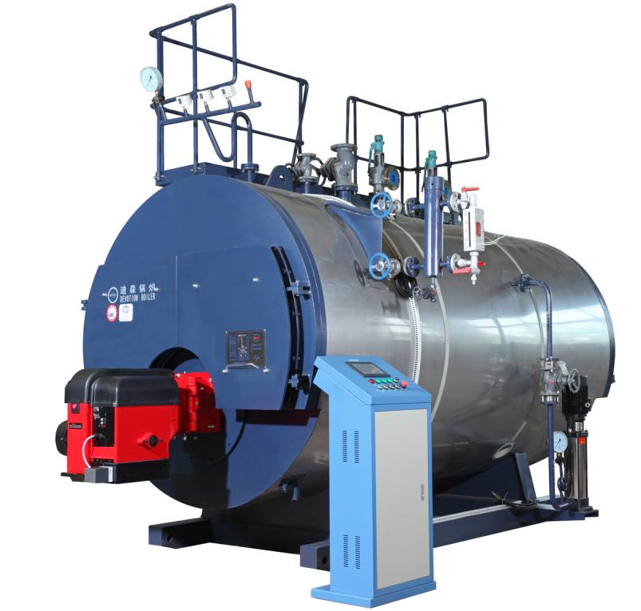
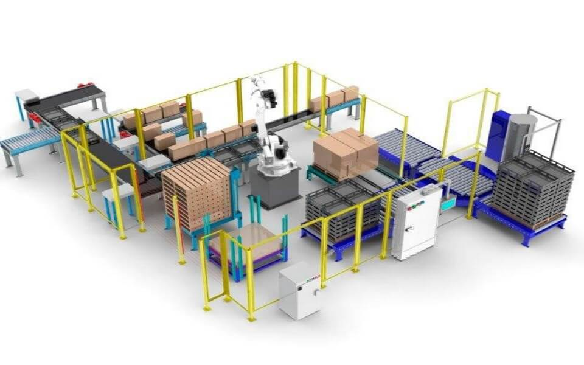
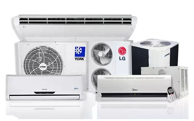
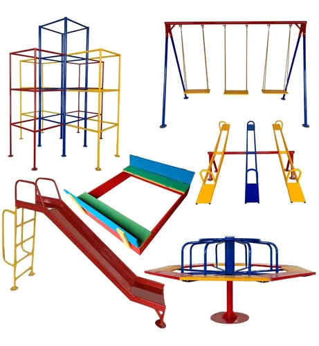
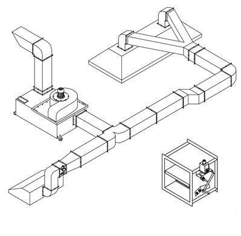
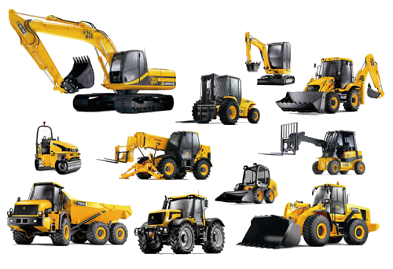

-

NR13 - Inspeção de Caldeiras
Referência: A inspeção em vasos de pressão no Brasil é regulamentada pela Norma Regulamentadora (NR) 13, que aborda os requisitos mínimos para a gestão da integridade estrutural de vasos de pressão, caldeiras, tubulações e tanques metálicos de armazenamento
Quem deve emitir: O laudo técnico de NR13 deve ser emitido por um engenheiro mecânico acompanhado de Anotação de Responsabilidade Técnica (ART).
Onde aplicar: Caldeiras, vasos de pressão, tubulações e tanques metálicos de armazenamento. -
NR13 - Inspeção de Vaso de Pressão
Referência: A inspeção em vasos de pressão no Brasil é regulamentada pela Norma Regulamentadora (NR) 13, que aborda os requisitos mínimos para a gestão da integridade estrutural de vasos de pressão, caldeiras, tubulações e tanques metálicos de armazenamento
Quem deve emitir: O laudo técnico de NR13 deve ser emitido por um engenheiro mecânico acompanhado de Anotação de Responsabilidade Técnica (ART).
Onde aplicar: Caldeiras, vasos de pressão, tubulações e tanques metálicos de armazenamento.
-

NR12 - Seguranças em Máquinas e Equipamentos
Referência: A NR-12, aborda a segurança no trabalho com máquinas e equipamentos, é regulamentada pela Lei 6.514, de 22 de dezembro de 1977. Esta norma estabelece os requisitos mínimos para garantir a segurança dos trabalhadores que utilizam, fabricam, importam, expõem e comercializam máquinas e equipamentos
Onde aplicar: Se aplica a todas as máquinas e equipamentos, novos e usados, que possam gerar riscos de natureza mecânica, elétrica, química ou física. -

PMOC - Plano de Manutenção, Operação e Controle de Sistemas de Climatização
Referência: O Art. 3º da Lei nº 13.589, de 04 de janeiro de 2018 estabelece que os Sistemas de climatização de ambientes e seus Planos de Manutenção, Operação e Controle - PMOC devem obedecer a parâmetros de qualidade do ar em ambientes climatizados artificialmente, em especial no que diz respeito a poluentes de natureza física, química e biológica, suas tolerâncias e métodos de controle, assim como obedecer aos requisitos estabelecidos nos projetos de sua instalação.
Onde aplicar: A lei abrange todos os edifícios que recebem o público, como escolas, hospitais, shopping centers, edifícios comerciais, entre outros. A lei aplica-se a qualquer sistema de ar condicionado ou outro sistema que modifique as condições ambientais de temperatura, umidade, etc -
Reclassificação de Monta
Referência: A Resolução CONTRAN Nº 810, DE 15 DE DEZEMBRO DE 2020 dispõe sobre a classificação de danos e os procedimentos para a regularização, a transferência e a baixa dos veículos envolvidos em acidentes
Onde aplicar: Este recurso pode ser aplicado em veículos que tenham suas avarias resultantes em classificação como “Média Monta” ou “Grande Monta” -

Laudo Técnico - Playgrounds Infantis e Brinquedos
Referência: A Lei Estadual nº 16.517/2014, de Santa Catarina, estabelece que os estabelecimentos com áreas de lazer para crianças devem ter laudo técnico e Anotação de Responsabilidade Técnica (ART).
Onde aplicar: A lei se aplica a diversos estabelecimentos, como buffets infantis, escolas, parques de diversões, shoppings centers, empresas de locação de brinquedos, condomínios, hotéis, restaurantes, fast-foods e eventos. -

Laudo Técnico - Sistemas de Exaustão em Cozinhas
Referência: De acordo com a NBR 14518, que estabelece os princípios gerais para projeto, instalação, operação, manutenção e ensaio de sistemas de ventilação em cozinhas profissionais, com ênfase na segurança contra incêndio e no controle ambiental.
Onde aplicar: A realização do laudo técnico é uma exigência legal para cozinhas industriais, profissionais, principalmente alocadas em edifícios públicos, shopping centers, edifícios comerciais, entre outros que devem estar em conformidade com as normas da ANVISA e do Corpo de Bombeiros. -

Laudo técnico - Máquinas Pesadas
Referência: Um laudo técnico de máquinas pesadas, conforme as NRs do Ministério do Trabalho, é um documento que atesta as condições de segurança e funcionamento de equipamentos utilizados em transporte, movimentação, armazenagem e manuseio de materiais.
Onde aplicar: Empilhadeiras, Pontes Rolantes, Caminhão Munck, Monta Carga, Talhas Elétricas e etc... Mantenha seus Equipamentos com segurança, conformidade, eficiência e documentação.